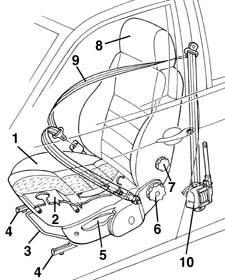
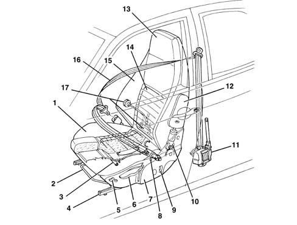

Introduction - FRONT SEATS
- Path
- Descriptions > 70 FITTINGS > 7045 FRONT SEATS > Introduction - FRONT SEATS
- Kind
- system description
- Applies to
- all engines; all production periods
- Interactive page
- https://sloeber94.github.io/elrnDB-a156/en/#/3239243
Applies to: all engines; all production periods
GLOSSARY
Magnesium
A metal which is exceptionally light, in relation to its volume (density 1.74 g/cm3) , and has excellent strength properties. It is used in mechanical constructions in the form of alloys of various types (parts may be cast or forged).
Pretensioners
These are safety devices fitted to the front seat belts which replace normal reels. In the case of a fairly severe frontal impact the device, activated by a small explosive charge, intervenes preventing the sliding of the belt and thereby securing the occupant to the seat, overcoming the inertia force which would tend to project them forwards.
Passive safety
This is the collection of measures which interact to reduce the consequences to the occupants of the vehicle after an accident. The following come into this category: the stratified windscreen, the collapsible steering column, the door opening cables, the material from which the steering wheel is made, the absence of dangerous projections and corners in the dashboard, the structure of the pedals, the shape and resistance of the seats, the head restraints, the seat belts (also with pre-tensioners), the air bags and the bodyshell with differentiated resistance, in other words the passenger survival cell which is as rigid as possible and the front and rear sections, on the other hand, with crumple zones designed to gradually absorb the energy of the impact.
Submarining
This is the phenomenon which can occur in the case of a frontal impact. Even with the seat belt fastened, the body of the occupant of the sea tends to slide under the belt.
VIEW OF ASSEMBLY
The diagram shows the entire subassembly

1, Lower cushion 2, Magnesium alloy structure 3, Reach adjustment lever 4, Guide 5, Height adjustment switches 6, Squab rake adjustment knob 7, Lumbar adjustment knob 8, Head restraint 9, Seat belt 10, Pretensioner
INTRODUCTION
The front seats have been designed to optimize comfort and safety and, thanks to the wraparound design, guarantee a safe driving position even on tortuous routes.
STRUCTURE
The frame of the lower cushion and squab is made out a single piece of aluminium alloy (*).
This technological innovation brings the following benefits:
- Significant reduction in seat weight.
- Reduction in internal squeaks and noise due to the single-piece structure of both parts of the frame.
- Increase in seat frame rigidity with a consequent increase in passive safety (*) in the case of shunting.
ADJUSTMENTS
The shape of the seat and the extensive adjustment possibilities, coupled with the possibility of adjusting the steering wheel, allow the optimum driving position for different "sized" drivers with diverse driving styles.
This is the range of possible adjustments:
- Longitudinal adjustment. The sliding guides offer a wide range of travel and are angled by 3° so that the seat lifts as it moves forward.
- Height adjustment Vertical travel is 40 mm. The control is carried out by an easy to use ratchet lever which requires little effort to operate.
- Adjustment of the backrest angle. It is operated by a rotary handle that allows micrometric adjustment.
- Lumbar adjustment (driver's seat on some versions). This is achieved by operating a knob on the backrest which controls a butterfly mechanism which varies the lumbar carrying capacity of the backrest.
SEAT BELTS
The front seat belts, fitted with pretensioners, have a double mounting on the seat.
In this way the belt follows the seat in the various positions it can assume, adapting to them to guarantee maximum safety in all situations.
In addition, the shape of the seat cushion and the profile of the seat belt greatly limit the phenomenon of the body sliding under the belt in the case of a frontal impact (submarining).
HEAD RESTRAINT
The head restraints are fitted with a height adjustment device which is fixed in such a way as to allow an optimum, stable position in the various intermediate positions.
Applies to: all engines; production: da 03/02 a 09/03, da 10/03
GLOSSARY
Pre-tensioners
These are safety devices fitted to the front seat belts replacing normal reels. In the case of a fairly severe frontal impact the device, activated by a small explosive charge, intervenes preventing the sliding of the belt and thereby securing the occupant to the seat, overcoming the inertia force which would tend to project them forwards.
Passive safety
This is the collection of measures which interact to reduce the consequences to the occupants of the vehicle following an accident. The following come into this category: the stratified windscreen, the collapsible steering column, the door opening cables, the material from which the steering wheel is made, the absence of dangerous projections and corners in the dashboard, the structure of the pedals, the shape and resistance of the seats, the head restraints, the seat belts (also with pre-tensioners), the air bags and the bodyshell with differentiated resistance, in other words the passenger survival cell which is as rigid as possible and the front and rear sections, on the other hand, with crumple zones designed to gradually absorb the energy of the impact.
Submarining
This phenomenon can occur in the case of a frontal impact. Even with the seat belt fastened, the body of the occupant of the seat tends to slide under the belt.
CONSTRUCTION FEATURES
The front seats on the GTA version have been designed in keeping with the sporty nature of the vehicle with a wraparound design to guarantee comfort and safe driving in all conditions.
STRUCTURE
The steel frame ensures excellent rigidity and strength.
The head restraint is incorporated in the sseat backrest.
The Side Bag module on the outer side is leather-covered.
Both the cushion and the backrest have heater pads.
A warning LED on the casing indicates that the heater pads are activated.
Special care has been taken over the upholstery which is extremely comfortable.
Adjustment
The shape of the seat and the extensive adjustment possibilities, coupled with the possibility of adjusting the steering wheel, allow the optimum driving position for different 'sized' drivers with diverse driving styles.
This is the range of possible adjustments:
- Longitudinal adjustment. The sliding guides offer a wide range of travel.
- Height adjustment The control is carried out by an easy to use ratchet lever which requires little effort to operate.
- Electrically operated adjustment of the backrest angle with a wide range. The switch is located at the front of the casing on the outside.
- Lumbar adjustment achieved by operating a knob on the backrest which controls a butterfly mechanism which varies the lumbar carrying capacity of the backrest.
Seat belts
The front seat belts, fitted with pre-tensioners, have a double mounting on the seat.
In this way the belt follows the seat in the various positions it can assume, adapting to them to guarantee maximum safety in all situations.
In addition, the shape of the seat cushion and the profile of the seat belt greatly limit the phenomenon of the body sliding under the belt in the case of a frontal impact (submarining).

1 - Cushion 2 - Lengthwise adjustment lever 3 - Steel structure 4 - Guide 5 - Backrest angle adjustment switch 6 - Height adjustment control 7 - Lower casing 8 - Heater pad warning light 9 - Heater pad control switch 10 - Backrest angle adjustment motor 11 - Pretensioner 12 - Side Bag 13 - Head restraint 14 - Heater pad 15 - Backrest 16 - Seat belt 17 - Lumbar adjustment device